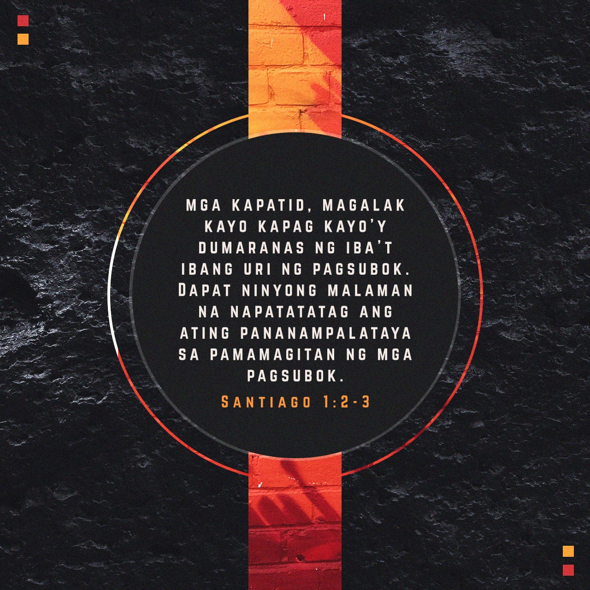

BERSO NG DEPRESIYON

Ang Panginoon ay malapit sa mga may pusong wasak, at inililigtas ang mga may bagbag na diwa.
Bakit ka namamanglaw, O kaluluwa ko? At bakit ka nagkakagulo sa loob ko? Magtiwala ka sa Diyos, sapagkat muli ko siyang pupurihin, ang aking Tagapagligtas at aking Diyos.
Huwag kang matakot, sapagkat ako'y kasama mo; huwag kang manglupaypay, sapagkat ako ang iyong Diyos. Palalakasin kita at tutulungan kita; aalalayan kita ng aking matuwid na kanang kamay.
Naghintay ako nang may pagtitiyaga sa Panginoon; siya'y lumapit sa akin at dininig ang aking panaghoy. Iniahon niya ako mula sa balon ng kapahamakan, mula sa putikan at lusak; itinuntong niya ang aking mga paa sa ibabaw ng bato at itinaguyod ang aking mga hakbang. Binigyan niya ako ng bagong awit, isang papuri sa ating Diyos. Marami ang makakakita at matatakot, at maglalagak ng kanilang tiwala sa Panginoon.
Kahit na ako'y maglakad sa libis ng pinakamadilim na anino, hindi ako matatakot ng kasamaan, sapagkat ikaw ay kasama ko; ang iyong pamalo at tungkod, sila ang aking kaaliwan.